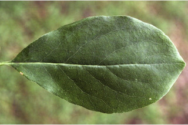
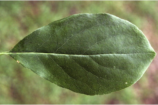
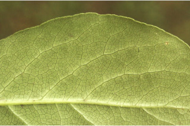
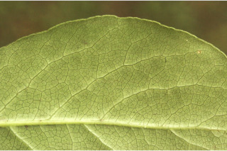
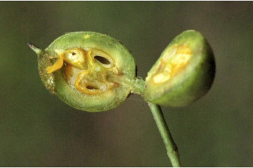
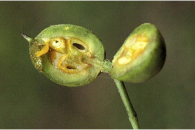

Small trees up to 5 m tall.
5 ಮೀ. ಎತ್ತರದವರೆಗಿನ ಸಣ್ಣ ಗಾತ್ರದ ಮರಗಳು.
Small trees up to 5 m tall.
சிறியமரங்கள் 5 மீ. உயரம் வரை வளரக்கூடியது.
Branchlets slender, terete, glabrous, lenticellate.
ಕಿರುಕೊಂಬೆಗಳು ತೆಳು, ದುಂಡಾಗಿದ್ದು, ರೋಮರಹಿತವಾಗಿದ್ದು ವಾಯುವಿನಿಮಯ ಬೆಂಡು ರಂಧ್ರಗಳ ಸಮೇತವಿರುತ್ತವೆ.
Branchlets slender, terete, glabrous, lenticellate.
சிறிய நுனிக்கிளைகள் மெல்லியது, குறுக்குவெட்டுத் தோற்றத்தில் வளையமானது, உரோமங்களற்றது, பட்டைத்துளைகள் (லெண்டிசெல்லேட்) உடையது.
Leaves simple, alternate, spiral, usually crowded at apex; petiole 0.5-1.2 cm long, canaliculate, glabrous; lamina 2.5-10 x 1.3-5 cm, elliptic or obovate, apex acute or subacuminate, sometimes obtuse, base acute, margin entire to crenulate; chartaceous or thinly coriaceous, glabrous; midrib canaliculate; secondary_nerves 5-8 pairs thin, branched; tertiary_nerves finely reticulate, sometimes obscure.
ಎಲೆಗಳು ಸರಳವಾಗಿದ್ದು ಪರ್ಯಾಯ ಮತ್ತು ಸುತ್ತು ಜೋಡನಾ ವ್ಯವಸ್ಥೆಯಲ್ಲಿದ್ದು ಸಾಮಾನ್ಯವಾಗಿ ತುದಿಯಲ್ಲಿ ಗುಂಪಾಗಿರುತ್ತವೆ; ಎಲೆತೊಟ್ಟುಗಳು 0.5 –1.2 ಸೆಂ.ಮೀ. ವರೆಗಿನ ಉದ್ದವಿದ್ದು,ಕಾಲುವೆಗೆರೆಯನ್ನು ಹೊಂದಿದ್ದು ರೋಮರಹಿತವಾಗಿರುತ್ತವೆ ; ಪತ್ರಗಳು2.5 -10 X 1.3 –5 ಸೆಂ.ಮೀ. ಗಾತ್ರ, ಅಂಡವೃತ್ತ ಅಥವಾ ಬುಗುರಿಯ ಆಕಾರ, ಚೂಪಾದ ಅಥವಾ ಉಪ - ಕ್ರಮೇಣ ಚೂಪಾಗುವ, ಕೆಲವು ವೇಳೆ ಚೂಪಲ್ಲದ ಮಾದರಿಯ ತುದಿ, ಚೂಪಾದ ಬುಡ, ನಯವಾದುದರಿಂದ ಹಿಡಿದು ಸೂಕ್ಷ್ಮ ದಂತಿತವಾದ ಅಂಚನ್ನು ಹೊಂದಿರುತ್ತವೆ,ಪತ್ರಗಳು ಕಾಗದ ಅಥವಾ ತೆಳು-ತೊಗಲನ್ನೋಲುವ ರೀತಿಯ ಮೇಲ್ಮೈ ಹೊಂದಿದ್ದು ರೋಮರಹಿತವಾಗಿರುತ್ತವೆ, ಮಧ್ಯನಾಳ ಕಾಲುವೆ ಗೆರೆಯನ್ನು ಹೊಂದಿರುತ್ತದೆ;ಎರಡನೇ ದರ್ಜೆಯ ನಾಳಗಳು 5- 8 ಜೋಡಿಗಳಿದ್ದು,ತೆಳುವಾಗಿರುತ್ತವೆ ಹಾಗೂ ಕವಲುಗಳ ಸಮೇತವಿರುತ್ತವೆ;ಮೂರನೇ ದರ್ಜೆಯ ನಾಳಗಳು ಸೂಕ್ಷ್ಮ ಜಾಲಬಂಧ ನಾಳ ವಿನ್ಯಾಸದಲ್ಲಿರುತ್ತವೆ, ಕೆಲವು ವೇಳೆ ಅಸ್ಪಷ್ಟವಾಗಿರುತ್ತವೆ.
Leaves simple, alternate, spiral, usually crowded at apex; petiole 0.5-1.2 cm long, canaliculate, glabrous; lamina 2.5-10 x 1.3-5 cm, elliptic or obovate, apex acute or subacuminate, sometimes obtuse, base acute, margin entire to crenulate; chartaceous or thinly coriaceous, glabrous; midrib canaliculate; secondary_nerves 5-8 pairs thin, branched; tertiary_nerves finely reticulate, sometimes obscure.
இலைகள் தனித்தவை, மாற்றுஅடுக்கமானவை, சுழல் போல் அமைந்தது, பொரும்பாலும் சிறுகிளைகளின் நுனியில் இலைகள் கூட்டமாக மற்றும் நெருக்கமாக காணப்படும்; இலைக்காம்பு 0.5-1.2 செ.மீ. நீளமானது, குறுக்குவெட்டுத் தோற்றத்தில் கேனாலிகுலேட், உரோமங்களற்றது; இலை அலகு 2.5-10 X 1.3-5 செ.மீ., நீள்வட்ட வடிவானது அல்லது தலைகீழ் முட்டை வடிவானது, அலகின் நுனி கூரியது அல்லது subஅதிக்கூரியது, சிலசமயங்களில் மெட்டையானது, அலகின் தளம் கூரியது, அலகின் விளிம்பு முழுமையானது முதல் சிறிய பிறை போன்ற பற்களுடையது; சார்ட்டேசியஸ் அல்லது மெல்லிய கோரியேசியஸ், உரோமங்களற்றது; மையநரம்பு மேற்புறத்தில் அலகின் பரப்பைவிட பள்ளமானது; இரண்டாம் நிலை நரம்புகள் 5-8 ஜோடிகள் மெல்லியது, கிளைத்தவை; மூன்றாம் நிலை நரம்புகள் நெருக்கமான வலைப்பின்னல் போன்றவை, சிலசமயங்களில் கண்களுக்கு புலப்படாது.
Inflorescence few flowered racemes; flowers yellow; pedicel up to 1 cm long.
ಪುಷ್ಪಮಂಜರಿಗಳು ತುದಿಯಲ್ಲಿನ,ಕೆಲವು ಹೂಗಳನ್ನೊಳಗೊಂಡ ಮಧ್ಯಾಭಿಸರದ ಮಾದರಿಯವುಗಳಾಗಿರುತ್ತವೆ;ಹೂಗಳು ಹಳದಿ; ತೊಟ್ಟು 1 ಸೆಂ.ಮೀ ವರೆಗಿನ ಉದ್ದ ಹೊಂದಿರುತ್ತದೆ.
Inflorescence few flowered racemes; flowers yellow; pedicel up to 1 cm long.
மஞ்சரி குறைந்த மலர்களுடைய ரெசீம்; மலர்கள் மஞ்சள் நிறமானவை; மலர்காம்பு 1 செ.மீ. நீளமானது.
Capsule, obliquely 2-valved, ca. 1 cm across; pedicel filiform; seeds 4-8.
ಸಂಪುಟ ಫಲ ಓರೆಯಾದ 2 ಕವಾಟಗಳನ್ನು ಹೊಂದಿದ್ದು ಅಂದಾಜು 1 ಸೆಂ.ಮೀ. ಅಡ್ಡಗಲತೆಯನ್ನು ಹೊಂದಿರುತ್ತವೆ;ತೊಟ್ಟುಗಳು ನೂಲಿನ ರೀತಿಯಿರುತ್ತವೆ;ಬೀಜಗಳ ಸಂಖ್ಯೆ 4 ರಿಂದ 8.
Capsule, obliquely 2-valved, ca. 1 cm across; pedicel filiform; seeds 4-8.
வெடிகனி (கேப்சியூல்), சமமற்ற 2-அறைகளுடையது, ca. 1 செ.மீ. குறுக்களவுடையது; மலர்காம்பு மெல்லியது; விதைகள் 4-8.
 

 


 
